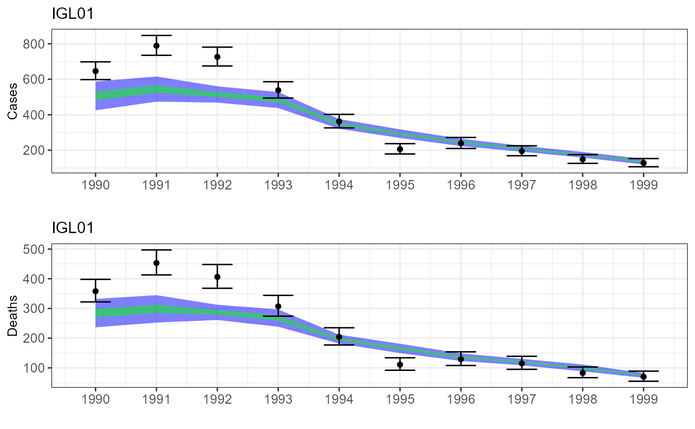

Worked Example 3 - Generating Epidemiological Data Sets
BWorkedExampleCDataGenerate.RmdThis worked example demonstrates how to use the package to generate a set of epidemiological data (serological, annual reported severe/fatal cases and/or annual outbreak occurrence) for specified years and regions (and age ranges, in the case of serological data).
This can be set up to either:
- Match a set of observed data supplied in appropriate formats
- Create a hypothetical set of data with no existing counterpart by matching to “dummy” data which presents dates, regions and/or age ranges in the appropriate formats
We first load the input data set, regional environmental covariate values, coefficients of environmental covariate values used to calculate spillover FOI and R0 values, and observed serological and annual case data (here generated by the model itself):
library(YellowFeverDynamics)
input_data <- readRDS(file = paste(path.package("YellowFeverDynamics"),
"/exdata/input_data_example.Rds", sep = ""))
enviro_data <- read.csv(file = paste(path.package("YellowFeverDynamics"),
"/exdata/enviro_data_example.csv", sep = ""),
header = TRUE)
enviro_coeffs <- read.csv(file = paste(path.package("YellowFeverDynamics"),
"/exdata/enviro_coeffs_example.csv",
sep = ""), header = TRUE)
# Seroprevalence data for comparison, by region, year & age group, in format
# no. samples/no. positives
obs_sero_data <- read.csv(file = paste(path.package("YellowFeverDynamics"),
"/exdata/obs_sero_data_example_single.csv",
sep = ""), header = TRUE)
# Annual reported case/death data for comparison, by region and year, in format
# no. cases/no. deaths
obs_case_data <- read.csv(file = paste(path.package("YellowFeverDynamics"),
"/exdata/obs_case_data_example_single.csv",
sep = ""), header = TRUE)
# Outbreak Y/N data for comparison, by region and year, in format
# 0 = no outbreaks, 1 = 1 or more outbreak(s) (here simply set to NULL)
obs_outbreak_data <- NULL
We set additional inputs for the data_match_single() function, which is used to generate model data to match observed or dummy data, as follows:
# Parameter values input to produce model parameters, potentially including
# spillover FOI and R0 by region, severe and fatal case reporting probability
params <- as.numeric(enviro_coeffs)
# List containing additional parameters: type of parameter set used to calculate
# spillover FOI and R0 (here both calculated from environmental covariates),
# number of repetitions for which to run model and obtain average outputs,
# environmental covariate data, fixed R0 values by region used when R0 is not a
# variable, and values of vaccine efficacy and severe and fatal case reporting
# probability used when these are not variables set via param_prop
const_list <- list(type = "FOI+R0 enviro", n_reps = 1, mode_start = 1, dt = 1.0,
enviro_data = enviro_data, R0_fixed_values = NULL,
vaccine_efficacy = 1.0, p_rep_severe = 0.1, p_rep_death = 0.2,
m_FOI_Brazil = 1.0) We run the data_match_single() function to produce a set of modelled data matching the observed data, i.e.:
- Seroprevalence values for the same age group(s) in the same
year(s)
- Numbers of reported cases and deaths in the same year(s)
- Outbreak occurrence data for the same year(s)
set.seed(1)
data1 <- data_match_single(params, input_data, obs_sero_data, obs_case_data,
obs_outbreak_data, const_list)We use the data_match_multi() function to run data_match_single() for a series of sets of values of the input parameters. The inputs are the same except that the parameter values are input as a data frame containing one set of parameter values per line.
# Data frame containing one set of parameter values per line
param_sets <- read.csv(file = paste(path.package("YellowFeverDynamics"),
"/exdata/enviro_coeffs_example_multi.csv",
sep = ""), header = TRUE)
set.seed(2)
data2 <- data_match_multi(param_sets, input_data, obs_sero_data, obs_case_data,
obs_outbreak_data, const_list)
#>
#> Set:
#> 1 2 3 4 5 6 7 8 9 10We plot the data output from data_match_single() or data_match_multi() together with the observed data on which it is based, using the sero_match_graphs() and case_match_graphs() functions. Observed data is shown (unless the hide_observed variable is set to TRUE) in black with error bars representing a binomial confidence interval (serological data) or negative binomial confidence interval (case data). Modelled data is shown in blue and green; if data matching was carried out for multiple parameter sets using data_match_multi(), the distribution of results can be shown. If the plot_type variable is set to “mean”, the mean of the results is displayed with 95% and 50% confidence intervals (in blue and green respectively). If plot_type is set to “all”, the 95% and 50% of values closest to the median are shown in blue and green respectively.
sero_graph <- sero_match_graphs(data2, obs_sero_data, plot_type = "all",
text_size = 10, hide_observed = FALSE)
print(sero_graph[[1]])
case_graph <- case_match_graphs(data2, obs_case_data, input_data,
plot_type = "mean", text_size = 10,
hide_observed = FALSE)
Rmisc::multiplot(case_graph$cases_graphs[[1]], case_graph$deaths_graphs[[1]])
Below is an example of generating hypothetical data by matching to “dummy” data:
#[TBA]